Next: Restraints and their derivatives Up: Equations used in the Previous: Equations used in the Contents Index
Distance is defined by points  and
and  :
:
| 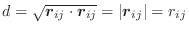 | (A.38) |
| 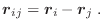 | (A.39) |
The first derivatives of  with respect to Cartesian coordinates are:
with respect to Cartesian coordinates are:
| 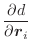 | 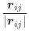 | (A.40) | |
| 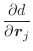 | 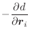 | (A.41) |
Angle is defined by points  ,
,  , and
, and  , and spanned by vectors
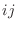 and 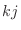:
, and spanned by vectors
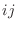 and 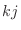:
| 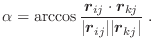 | (A.42) |
The first derivatives of α with respect to Cartesian coordinates are:
| 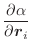 | 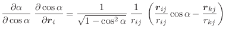 | (A.43) | |
| 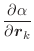 | 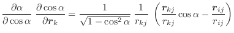 | (A.44) | |
| 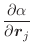 | 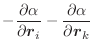 | (A.45) |
These equations for the derivatives have a numerical instability when the angle goes to 0 or to 180°. Presently, the problem is ‘solved’ by testing for the size of the angle; if it is too small, the derivatives are set to 0 in the hope that other restraints will eventually pull the angle towards well behaved regions. Thus, angle restraints of 0 or 180° should not be used in the conjugate gradients or molecular dynamics optimizations.
Dihedral angle is defined by points  ,
,  ,
,  , and
, and  (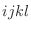):
(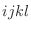):
| 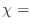 sign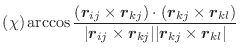 | (A.46) |
| sign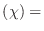 sign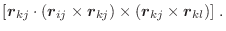 | (A.47) |
The first derivatives of χ with respect to Cartesian coordinates are:
| 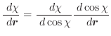 | (A.48) |
| 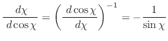 | (A.49) |
| 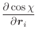 | 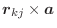 | (A.50) | |
| 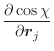 | 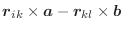 | (A.51) | |
| 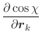 | 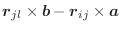 | (A.52) | |
| 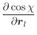 | 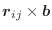 | (A.53) | |
| 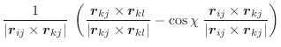 | (A.54) | ||
| 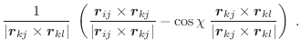 | (A.55) |
These equations for the derivatives have a numerical instability when the angle goes to 0. Thus, the following set of equations is used instead [van Schaik et al., 1993]:
| 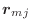 | 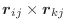 | (A.56) | |
| 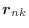 | 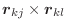 | (A.57) | |
| 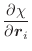 | 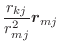 | (A.58) | |
| 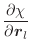 | 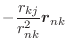 | (A.59) | |
| 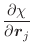 | 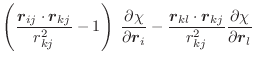 | (A.60) | |
| 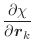 | 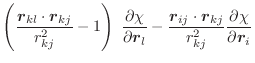 | (A.61) |
The only possible instability in these equations is when the length of the central bond of the dihedral, 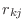, goes to 0. In such a case, which should not happen, the derivatives are set to 0. The expressions for an improper dihedral angle, as opposed to a dihedral or dihedral angle, are the same, except that indices are permuted to 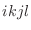. In both cases, covalent bonds , 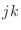, and 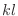 are defining the angle.
This is the accessibility value calculated by the PSA algorithm (see Model.write_data()). This is usually set by the last call to Restraints.make() or Restraints.make_distance(). First derivatives are not calculated, and are always returned as 0.
Atomic density for a given atom is simply calculated as the number of atoms within a distance EnergyData.contact_shell of that atom. First derivatives are not calculated, and are always returned as 0.
The absolute atomic coordinates 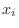, 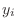 and are available
for every point  , primarily for use in anchoring points to planes, lines
or points. Their first derivatives with respect to Cartesian coordinates
are of course simply 0 or 1.
, primarily for use in anchoring points to planes, lines
or points. Their first derivatives with respect to Cartesian coordinates
are of course simply 0 or 1.